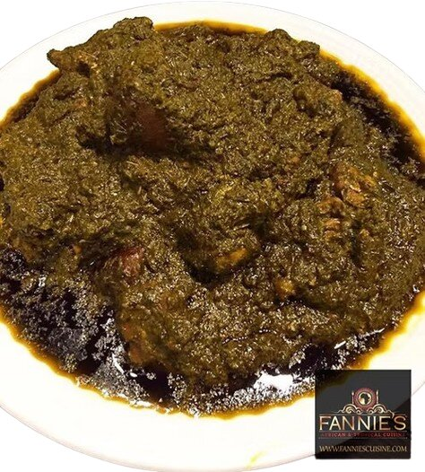

In a large heavy-bottomed pot, combine your fresh meats (beef, goat, or chicken) with half of the chopped onions, 2 bouillon cubes, and a pinch of salt. Add 1 cup of water and boil over medium-high heat for 20–25 minutes until the meat is tender and creates a flavorful stock. If using smoked turkey or dried fish, add them during the last 10 minutes of boiling.
Add the ground cassava leaves and remaining chopped onions directly into the pot with
the cooked meat and broth. Add 2 additional cups of water to submerge the greens.
Cover and simmer over medium heat for 30–40 minutes.
Key Tip: Raw cassava leaves contain cyanogenic glucosides which must be broken down
by thorough boiling. Ensure the leaves boil uncovered or partially covered until they
lose their bright green color and turn a dark olive green.
Scoop ½ cup of peanut butter into a small bowl and whisk it with 1 cup of warm water or broth until smooth. Stir the peanut butter mixture into the simmering pot along with the whole or blended Scotch bonnet peppers. Stir thoroughly so the peanut butter incorporates without sticking to the bottom.
Pour in 1 cup of red palm oil. Reduce heat to medium-low and let the stew simmer uncovered for 30–45 minutes, stirring occasionally. As the liquid evaporates, the red oil will rise to the surface and fry the greens slightly—this process gives Liberian cassava leaf its signature deep flavor and rich, thick texture.
Taste the stew and adjust seasoning with the remaining bouillon cube or salt as needed. Continue simmering until most of the excess water has evaporated and the red oil glistens freely on top. Remove from heat and let sit for 10 minutes before serving.
Serve hot over a generous bed of steamed white rice, plain boiled plantains, or fufu. Cassava leaves can be paired with many different foods depending on your personal creativity, but eating it with rice, plaintain, or fufu is the conventional/typical way of eating it in Liberia, West Africa.